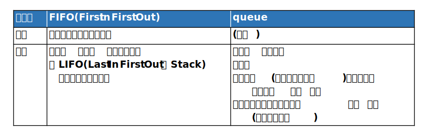

違いがわかりづらい用語
なにものか？
違いがわかりづらい用語を集めてみた。
accuracy(正確さ)とprecision(精度)
・『リアルタイム/マルチタスクシステムの徹底研究』 藤倉俊幸
によれば
authentication(認証)とcertification(認定)
・認証には2種類ある
によれば
concurrent(並行実行)とparallel(並列実行)
declaration(宣言)とdefinition(定義)
discとdisk
・「disc」と「disk」の違い
などによれば
Distance と Metric
Equivalence(等価性)とInvariance(不変性)

error(誤り)/fault(不整合)/failure(故障)/defect(障害)
validation(検証)/verification(照合)/test(検査)
・『リアルタイム/マルチタスクシステムの徹底研究』 藤倉俊幸
・Validation and Verification
によれば、
模式的に書くと...
FIFOとqueue

heapとstack
latency(レイテンシー, 潜伏期間)とthroughput(スループット)
mutexとsemaphor
notice(気づく)とrealize(気づく)
気づくの英語「notice」「realize」「recognize」の違いと使い分けを解説！
によれば、こんな感じ。

probalisticとstochastic
サンプル数とサンプルサイズ
securityとsafety